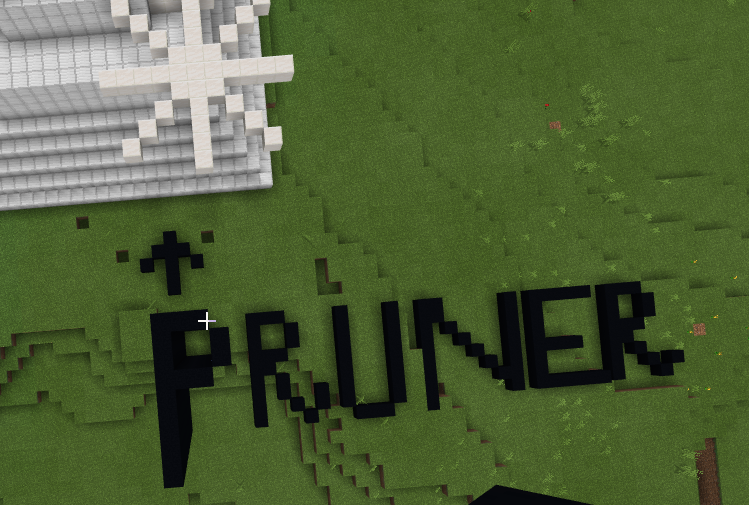
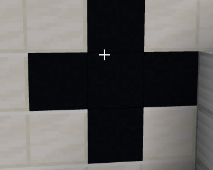

The invention is that when plants need water, fertilisier or have any other requirements there is a sensor attached to it that will sense it's needs and provide it.It will increase their life span.
When was it invented?
The plant monitor was invented on the 21 of september 2021 8:40 pm.
Who invented it?
It was invented by Gauransh a 10 year old boy.
Why was it invented?
This peice of technology was invented to look after crop and plants while farmers and plant owners are away so they don't die.
Step 2
How I am going to improve technolgy to create the Plant Monitor?
Since sprinklers and other essensiatalls and come separately my invention will be modified that it inclueds from sprinklers to pest net.It will have sensors attached to it so it give a perfect amount of everything.
Step 3
The diagram of my invention
Giant water sprinklers (sprays water when the sensor sences it an individual plant or or an aarry of crops).
The pruner in my invention(pops out on the push of a button)
The liquid fertilisier sprayer(pops out on the push of a button)
This is the compost distributor(pops out on the push of a button)

This is a child safe pruner(pops out on the push of a button)

This is the sensor which opens up and throws a pest net when a pest is near a plany.
This is how the plant monitor looks from the top(pops out on the push of a button
Evaluate
Aim of the project?
To keep plants alive while their onwers are away.
What worked well?
The support of modern technolgy while I was creating the Plant Monitor.
What challanges did you face?
To make the design pactical.
How I dealt with any challange?
I had to balance the technolgy to make sure the product was user friendly.